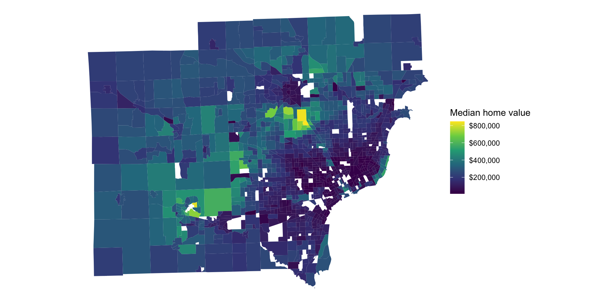
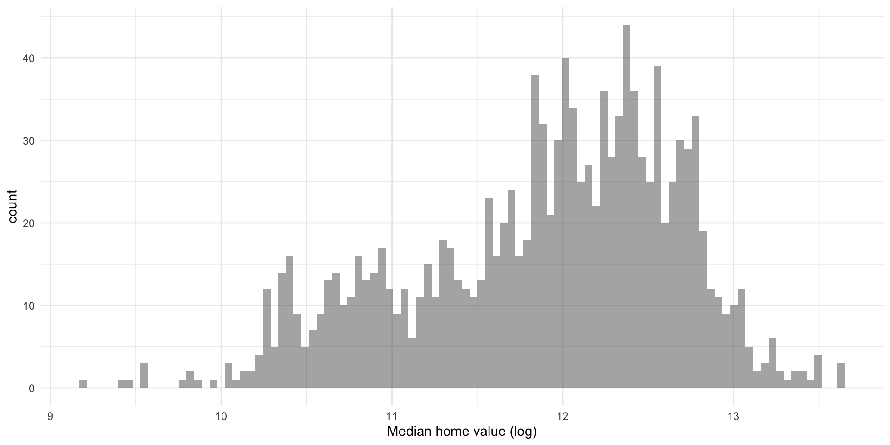
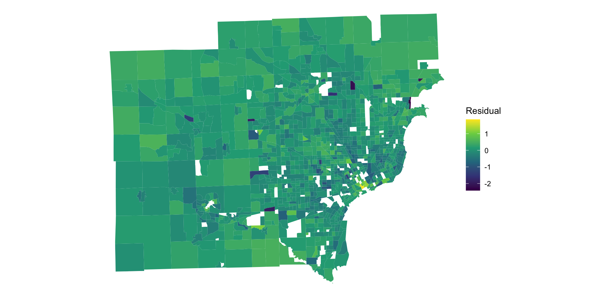

if (!require("tidycensus")) install.packages('tidycensus')
if (!require("tidyverse")) install.packages('tidyverse')
if (!require("tigris")) install.packages('tigris')
if (!require("sf")) install.packages('sf')
if (!require("units")) install.packages('units')
if (!require("ggcorrplot")) install.packages('ggcorrplot')
if (!require("car")) install.packages('car')
if (!require("spdep")) install.packages('spdep')
if (!require("CARBayes")) install.packages('CARBayes')
if (!require("GWmodel")) install.packages('GWmodel')
if (!require("patchwork")) install.packages('patchwork')
library(tidycensus);library(tidyverse)
library(tigris);library(GWmodel)
library(sf);library(CARBayes)
library(spdep);library(units)
library(car);library(ggcorrplot)
library(patchwork)Spatial Statistics
Maria Masotti
2023-07-20
Roadmap for today
Introduce the 3 main types of spatial data
Learn key concepts and techniques in the statistical analysis of areal spatial data through a real data example
Pull cenus data in R
Map areal data with ggplot
Motivate the need for spatial models
Apply and interpret a CAR model
Learn how to apply and interpret geographically weighted regression
What are spatial data?
Data that have “geographical” references. Data that can be mapped.
Applications in
geology
medical imaging
epidemiology
ecology
civil engineering
Types of spatial data
Geostatistical
Point pattern
Areal
Geostatistical Data
The quantity of interest has a continuous value at any location but we only measure the quantity at certain sites. These values are our data.

Point Pattern Data
The main interest is in the locations of all occurrences of some event. Exact locations are recorded.

Areal Data
Spatial data measured and reported by regions
Only one value is reported for a region
Often arises by aggregation; data may be aggregated due to convenience or to protect confidentiality

Spatial data are everywhere
What’s the big deal?
- Maps, images, and other spatial data often display strong positive spatial autocorrelation, the tendency for sites that are close together to have similar values.

Spatial Autocorrelation
Leveraging spatial autocorrelation:
- more accurate prediction
- increase power
Ignoring spatial autocorrelation:
- increased bias
- deflated variance estimates
- increased type 1 error rates
Modeling Median Home Value (MHV) in SE Michigan
Goals:
- Identify best neighborhoods to purchase a house
- Determine what variables influence MHV in SE Michigan
- Check for non-stationarity in the effects of the influential variables
Follow along!
Run the analysis yourself with the R markdown file
Pull and analyze data from another city - how does it compare?
Libraries
My Journey


We will pull data from the ACS (American Community Survey) using the tidycensus R package:
variables_to_get <- c(
median_value = "B25077_001",
median_rooms = "B25018_001",
median_income = "DP03_0062",
total_population = "B01003_001",
median_age = "B01002_001",
pct_college = "DP02_0068P",
pct_foreign_born = "DP02_0094P",
pct_white = "DP05_0077P",
median_year_built = "B25037_001",
percent_ooh = "DP04_0046P"
)
housing_data <- get_acs(
geography = "tract",
variables = variables_to_get,
state = "MI",
county = c("Washtenaw","Wayne","Oakland","Macomb","Livingston"),
geometry = TRUE,
output = "wide",
year = 2020
)
housing_data<-housing_data%>%
dplyr::select(!ends_with("M"),-NAME) %>% #remove margin of error
rename_with(.fn = ~str_remove(.x, "E$")) %>% #remove "E"
na.omit()Mapping MHV with ggplot2
Goal 1
- I’m looking to buy a house in SE Michigan.
- I want a bargain in a desirable area
- Let’s look for tracts that are relatively cheap but surrounded by relatively expensive areas.
Local spatial autocorrelation
First, we need to quantify the extent to which each tract is similar or different from its neighboring tracts. This is akin to calculating local spatial autocorrelation.
We can determine local spatial autocorrelation using a local Moran’s I statistic (LISA).
\[ I_i=\frac{(v_i-\bar{v})}{\sum_k (v_k-\bar{v})^2/(n-1)}\sum_jw_{ij}(v_j-\bar{v}) \] where \(w_{ij}\) is 1 if tract \(i\) and \(j\) are neighbors and 0 if not, and \(v_i\) is the MHV at tract \(i\).
Positive values indicate spatial clustering (close tracts have similar MHV). Negative values indicate potential outliers (close tracts have different MHV).
Coding Neighbors in R with spdep
Recall \(w_{ij}'s\) are equal to 1 if tract \(i\) is bordering tract \(j\) and 0 if not. We can find the \(w_{ij}'s\) in R and visualize the neighborhood graph for SE MI.
Then we can define the spatial weights with a binary scheme where \(w_{ij}\) is 1 if tract \(i\) and \(j\) are neighbors (connected by blue line) and 0 if not.
Calculating Local Moran’s I in R
Now, back to calculating local autocorrelation via Local Moran’s I:

Defining clusters based on Local Moran’s I
Recall, I am looking for a neighborhood that is cheaper than average but surrounded by neighborhoods that are expensive. We will define 4 clusters:
High-high: high MHV, positive I
High-low: high MHV, negative I
Low-low: low MHV, positive I
Low-high: low MHV, negative I
housing_moran_clusters <- housing_moran_df %>%
mutate(cluster = case_when(
p_i>.05~"Not signif",
median_value > mean(median_value) & local_i > 0 ~ "High-high",
median_value > mean(median_value) & local_i < 0 ~ "High-low",
median_value < mean(median_value) & local_i > 0 ~ "Low-low",
median_value < mean(median_value) & local_i < 0 ~ "Low-high"
))Goal 2
Now I want to investigate which factors influence MHV in SE Michigan.
We can proceed by building a model for MHV with available predictors from the survey data we already pulled.
First, let’s inspect the distribution of MHV:
The distribution of MHV is “right-skewed”. This violates the assumption that the outcome is Gaussian or Normal for linear regression modeling.
Let’s try a log transformation:
Let’s calculate a few variables that will be useful in modeling. We will create
pop_densityas the total population of the census tract divided by the area of the census tractmedian_structure_ageas the median age of the structures within the census tract
A model
Let’s fit this linear regression model:
\[ \log(MHV_i)=\alpha + \beta_1*(\text{median_rooms}_i) + \beta_2*(\text{median_income}_i) + \\ \beta_3*(\text{pct_college}_i) + \beta_4*(\text{pct_foreign_born}_i) + \\ \beta_5*(\text{pct_white}_i) + \beta_6*(\text{median_age}_i) + \\ \beta_7*(\text{median_structure_age}_i) + \beta_8*(\text{percent_ooh}_i) + \\ \beta_9*(\text{pop_density}_i) + \epsilon_i\\ \]
For simplicity we can write:
\[ log(MHV_i)=\alpha + \sum_{p=1}^9{X}_{pi}{\beta}_p+\epsilon_i \]
A model in R
formula <- "log(median_value) ~ median_rooms + median_income + pct_college + pct_foreign_born + pct_white + median_age + median_structure_age + percent_ooh + pop_density"
model1 <- lm(formula = formula, data = housing_data_for_model)
summary(model1)
Call:
lm(formula = formula, data = housing_data_for_model)
Residuals:
Min 1Q Median 3Q Max
-2.32908 -0.14889 0.01438 0.17966 1.77185
Coefficients:
Estimate Std. Error t value Pr(>|t|)
(Intercept) 1.027e+01 9.204e-02 111.553 < 2e-16 ***
median_rooms -3.110e-03 1.579e-02 -0.197 0.843869
median_income 6.336e-06 7.390e-07 8.574 < 2e-16 ***
pct_college 1.566e-02 8.316e-04 18.831 < 2e-16 ***
pct_foreign_born 3.687e-03 1.006e-03 3.667 0.000256 ***
pct_white 8.936e-03 4.499e-04 19.860 < 2e-16 ***
median_age 1.067e-02 1.536e-03 6.950 5.86e-12 ***
median_structure_age -5.619e-05 2.063e-05 -2.723 0.006561 **
percent_ooh -4.614e-03 8.007e-04 -5.763 1.04e-08 ***
pop_density -6.772e-06 1.089e-05 -0.622 0.533982
---
Signif. codes: 0 '***' 0.001 '**' 0.01 '*' 0.05 '.' 0.1 ' ' 1
Residual standard error: 0.333 on 1254 degrees of freedom
Multiple R-squared: 0.8206, Adjusted R-squared: 0.8193
F-statistic: 637.4 on 9 and 1254 DF, p-value: < 2.2e-16Anything unexpected in these results?
Multicollinearity
Let’s investigate potential multicollinearity in our data by visually checking for highly correlated variables. A correlation matrix plot is useful here:
We can also calculate the variance inflation factor (VIF) for each variable. The VIF is the ratio of the variance of estimating each coefficient in a multiple regression model by the variance of a model constructed using only one term. A VIF of 1 indicates no collinearity; VIF values above 5 suggest a level of collinearity that has problematic influence on model interpretation.
median_rooms median_income pct_college
3.929025 7.813064 3.532471
pct_foreign_born pct_white median_age
1.251486 2.383198 1.425641
median_structure_age percent_ooh pop_density
1.207343 3.695615 1.500314 median_income has a VIF of over 7. A potential solution involves removing this variable and re-running the model; as it is highly correlated with other predictors in the model, the effect of median household income would in theory be captured by the remaining predictors.
Another model in R
Dropping the median_income variable:
formula2 <- "log(median_value) ~ median_rooms + pct_college + pct_foreign_born + pct_white + median_age + median_structure_age + percent_ooh + pop_density"
model2 <- lm(formula = formula2, data = housing_data_for_model)
summary(model2)
Call:
lm(formula = formula2, data = housing_data_for_model)
Residuals:
Min 1Q Median 3Q Max
-2.41914 -0.15727 0.01071 0.19438 1.85719
Coefficients:
Estimate Std. Error t value Pr(>|t|)
(Intercept) 9.968e+00 8.759e-02 113.799 < 2e-16 ***
median_rooms 7.067e-02 1.361e-02 5.191 2.43e-07 ***
pct_college 2.068e-02 6.073e-04 34.058 < 2e-16 ***
pct_foreign_born 4.157e-03 1.033e-03 4.025 6.03e-05 ***
pct_white 9.947e-03 4.465e-04 22.276 < 2e-16 ***
median_age 1.070e-02 1.579e-03 6.774 1.92e-11 ***
median_structure_age -9.102e-05 2.081e-05 -4.374 1.32e-05 ***
percent_ooh -3.311e-03 8.085e-04 -4.095 4.49e-05 ***
pop_density -1.949e-05 1.109e-05 -1.758 0.0791 .
---
Signif. codes: 0 '***' 0.001 '**' 0.01 '*' 0.05 '.' 0.1 ' ' 1
Residual standard error: 0.3425 on 1255 degrees of freedom
Multiple R-squared: 0.8101, Adjusted R-squared: 0.8089
F-statistic: 669.3 on 8 and 1255 DF, p-value: < 2.2e-16Model diagnostics
Residuals should be Gaussian distributed, independent, constant variance.
housing_data_for_model$residuals <- residuals(model2)
housing_data_for_model$fitted <- fitted(model2)
diagnostic1<-ggplot(housing_data_for_model, aes(x = residuals)) +
geom_histogram(bins = 100, alpha = 0.5) +
theme_minimal()
diagnostic2<-ggplot(housing_data_for_model, aes(y = residuals,x=fitted)) +
geom_point(alpha=.5) +
geom_smooth() +
theme_minimal()
diagnostic1+diagnostic2Independent? Let’s check.
Assessing Spatial Autocorrelation
Spatial autocorrelation is a measure of similarity between nearby observations in space. Let’s check for spatial autocorrelation in the residuals from model 2:
Global Moran’s I statistic
We can compute a global level of spatial autocorrealtion of the model residuals to see if the residuals are correlated in space.
\[ I=\frac{N}{W}\frac{\sum_i\sum_j w_{ij}(r_i-\bar{r})(r_j-\bar{r})}{\sum_i(r_i-\bar{r})^2} \]
where \(w_{ij}\) is the “spatial weight” between tract \(i\) and tract \(j\), \(N\) is the number of tracts, \(W\) is the sum of the \(w_{ij}\)’s, \(r_i\) is the residual at tract \(i\), \(\bar{r}\) is the mean residual.
The form of Moran’s I is a weighted sum of cross-products of deviations from the mean. When values for features \(i\) and \(j\) are both larger or smaller than the mean, the cross product will be positive. When one is smaller and one is larger, the cross product will be negative. If the values in a data set tend to cluster spatially (high near high and low near low), I will be positive. If like values tend to repel each other, I will be negative. If values are randomly dispersed, I will be near zero.
We will use the spatial weights from before and compute global Moran’s I.
Moran I test under randomisation
data: housing_data_for_model$residuals
weights: weights
Moran I statistic standard deviate = 12.965, p-value < 2.2e-16
alternative hypothesis: greater
sample estimates:
Moran I statistic Expectation Variance
0.2050100255 -0.0007917656 0.0002519739 Moran’s I is about 0.2 which is significantly higher than 0 indicating spatial autocorrelation in the residuals. So our model is misspecified!
CAR model
We can account for the spatial autocorrelation in the outcome MHV by adding an additional term to the linear regression model:
\[ Y_i \sim \alpha + \sum_{p=1}^P{X}_{pi}{\beta}_p+\phi_i \]
The \(\phi_i\) is the spatial random effect for tract \(i\). In a Bayesian context we specify a prior for \(\phi_i\) with the following form:
\[ \phi_i|\boldsymbol{\phi}_{-i},\boldsymbol{W},\tau^2,\rho \sim N\bigg(\frac{\rho\sum_jw_{ij}\phi_j}{\rho\sum_jw_{ij}+1-\rho},\frac{\tau^2}{\rho\sum_jw_{ij}+1-\rho}\bigg) \]
The spatial effect at tract \(i\) follows a Gaussian distribution with the mean proportional to the weighted sum of the spatial effects at neighboring tracts. This will induce spatial autocorrelation in the outcome variable, MHV.
Fitting a CAR model in R using CARBayes
The CAR model requires MCMC to estimate the posterior distribution of the model parameters. We need to specify \(W\), the neighborhood matrix. We will again use the binary coding scheme which gives a weight of 1 if two tracts share a border and 0 if not.
With the posterior samples we can calculate 95% credible intervals and Bayesian p-values.
beta.samples.matrix <- rbind(CARmodel$samples$beta)
colnames(beta.samples.matrix) <- colnames(CARmodel$X)
mcmc.p<-function(x){
2*min(length(which(x<0))/length(x),length(which(x>0))/length(x))
}
round(t(rbind(estimate=apply(beta.samples.matrix, 2, mean), apply(beta.samples.matrix,
2, quantile, c(0.025, 0.975)),p=apply(beta.samples.matrix,2,mcmc.p))), 5) estimate 2.5% 97.5% p
(Intercept) 10.01203 9.83455 10.18700 0.00000
median_rooms 0.11086 0.08442 0.13808 0.00000
pct_college 0.01999 0.01824 0.02170 0.00000
pct_foreign_born 0.00625 0.00366 0.00888 0.00000
pct_white 0.00697 0.00568 0.00825 0.00000
median_age 0.00701 0.00404 0.01003 0.00000
median_structure_age -0.00007 -0.00012 -0.00003 0.00130
percent_ooh -0.00345 -0.00495 -0.00197 0.00000
pop_density 0.00002 -0.00001 0.00004 0.15625For the most part, the estimates from the CAR model are in agreement with the non-spatial linear regression model. However, pop_density changed directionality and lost significance.
Model diagnostics CAR model
housing_data_for_model$car_residuals<-CARmodel$residuals$response
moran.test(housing_data_for_model$car_residuals, weights)
Moran I test under randomisation
data: housing_data_for_model$car_residuals
weights: weights
Moran I statistic standard deviate = -8.4658, p-value = 1
alternative hypothesis: greater
sample estimates:
Moran I statistic Expectation Variance
-0.1349552476 -0.0007917656 0.0002511471 Now, the I statistic is negative with p-value=1. There is no longer any evidence that residuals are spatially autocorrelated.
Goal 3: Explore non-stationarity in the predictors
The CAR model estimates global associations between the outcome variable, MHV, and its predictors. This lends itself to conclusions like “In SE Michigan, higher levels of educational attainment are associated with higher MHVs.” However, it is possible that a realtionship between outcome and predictor may vary from neighborhood to neighborhood. This phenomenon is called spatial non-stationarity.

GWR
Geographically weighted regression (GWR) is designed to evaluate local variations in the results of regression models. The basic form of GWR for tract \(i\) can be written as:
\[ log(MHV_i)=\alpha_i + \sum_{p=1}^P\beta_{ip}X_{ip}+\epsilon_i \]
where \(P\) is the number of predictors. Contrasting this with the previously defined model:
\[ log(MHV_i)=\alpha + \sum_{p=1}^P\beta_{p}X_{ip}+\epsilon_i \]
Data borrowing
GWR uses a moving-window weighting technique to obtain separate regression equations for each spatial location. For a target tract, neighboring tracts are weighted based on a distance decay function. Closer locations will have greater influence on the results for the local model and further locations will have less influence.

Distance-decay functions
- The form of the distance decay function must be specified.
- Examples are Gaussian, Bi-square, and Exponential.
- They differ in the rate at which the spatial weights decline.
Gaussian: \(w_{ij}=\exp(-\frac{d_{ij}^2}{h^2})\)
Exponential: \(w_{ij}=\exp(-\frac{d_{ij}}{h})\)
Bi-square: \(w_{ij}=1-(\frac{d_{ij}^2}{h^2})^2\)

Bandwidth
The bandwidth, h, is a parameter of the distance decay function and can be specified by the user or chosen via cross-validation. In an adaptive GWR the bandwidth is the nearest neighbor at which the weights fall to zero, or approximately zero.
small bandwidth = restricts data included in local regression to only those recorded in close proximity to the regression point
large bandwidth = data from locations further away influence the local regression
Bias - variance trade-off
larger bandwidth -> larger bias
smaller bandwidth -> larger variance

Spatial weights at different bandwidths for areal data. Source
Fitting GWR model with GWmodel
We will set the bandwidth to 100 and use the bi-square decay function. This means that the local regression model fit at tract \(i\) uses data from only the 100 nearest neighbors. Once the bandwidth is chosen we can run the model and plot the results:
We can plot local \(R^2\) estimates to assess how the model is fitting locally:

The model doesn’t fit as well in some edge areas.
In the global model, percent with a college degree is positively associated with MHV. It seems this relationship is even stronger in the neighborhoods immediately surrounding downtown Detroit.
In the global model, percent owner-occupied is negatively associated with MHV. It seems this relationship is strongest in downtown Detroit. Suburban areas surrounding Detroit tend to have more positive associations between percent owner-occupied and MHV.
The local estimates for the effect of median rooms tends to be consistent over the area except for a few spots. The upper right hand corner of the map is near / on the lake. Homes on the waterfront in this area tend to be very expensive and may be influencing local estimates here.
Questions ?
Resources
Point pattern data: spatstat.org